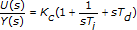
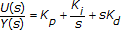
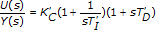

Add�
Add�
 Find
FindStandard PID literature provides several ways to define a PID controller. In general, PID controllers are classified using the following forms.
In the Academic form, the proportional parameter (P) actuates on the integral (I) and derivative (D) terms, as represented by the following equation:

The algorithms implemented by the PID VIs are based on the Academic form with time expressed in minutes.
In the Parallel form, the three parameters P, I, and D are independent of each other and control each interaction. This form also is referred to as non-interacting PID. The Parallel form is represented by the following equation:

In the Series form, the parameters are coupled and in series with each component, as represented by the following equation:

You can use the PID Structure Conversion VI to convert a PID controller from one topology, or form, to another.
Add�
Find